Flors
2024
València
Projecte personal
Digital
Cada flor és com un poema, una cançó que el vent susurra amb secrets del passat. La seua presència ens recorda que les hem de cuidar. Que ens hem de cuidar. Que no són eternes, i nosaltres tampoc. Són testimonis silenciosos de la transformació del món. Cuidem la terra, cuidem el bosc, cuidem la mar. Cuidem les flors. Cuidem-nos.
Cada flor es como un poema, una canción que el viento susurra con secretos del pasado. Su presencia nos recuerda que tenemos que cuidarlas. Que tenemos que cuidarnos. Que no son eternas, y nosotrxs tampoco. Son testigos silenciosos de la transformación del mundo. Cuidemos la tierra, cuidemos el bosque, cuidemos el mar. Cuidemos las flores. Cuidémonos.
Each flower is like a poem, a song that the wind whispers with secrets of the past. Their presence reminds us that we must take care of them. That we must take care of ourselves. They are not eternal, and neither are we. They are silent witnesses to the transformation of the world. Let us care for the earth, care for the forest, care for the sea. Let us care for the flowers. Let us care for each other.
صكلُّ زهرة كقصيدة، كأغنية يهمس بها الريح حاملةً أسرار الماضي. وجودها يذكّرنا بأننا مدعوّون إلى العناية بها. إلى العناية ببعضنا. فهي ليست أبدية، وكذلك نحن. إنها شواهد صامتة على تحوّلات العالم. لنعتنِ بالأرض، لنعتنِ بالغابة، لنعتنِ بالبحر. لنعتنِ بالأزهار. لنعتنِ بأنفسنا.
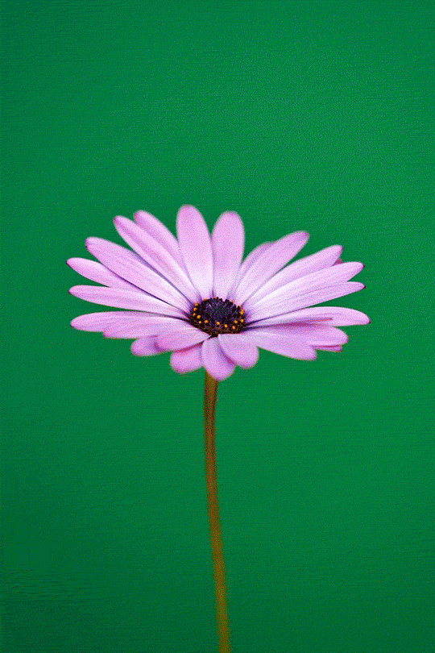
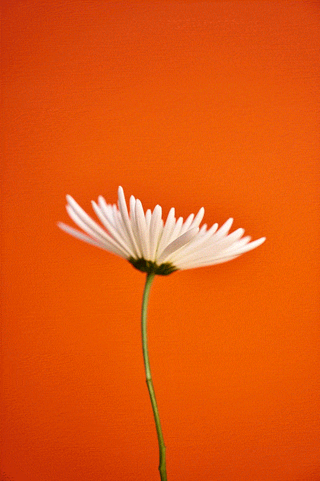
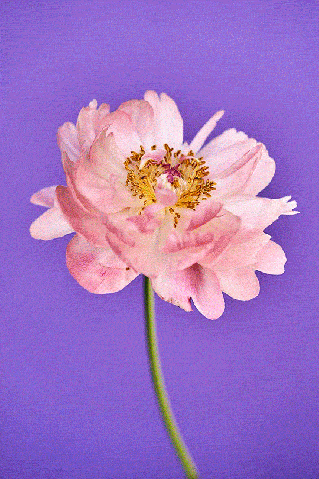
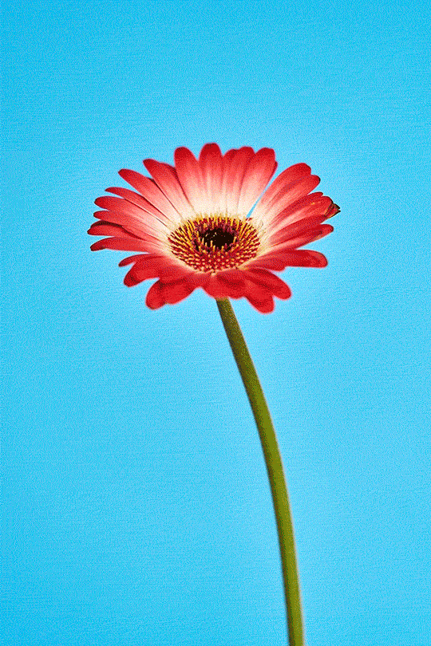
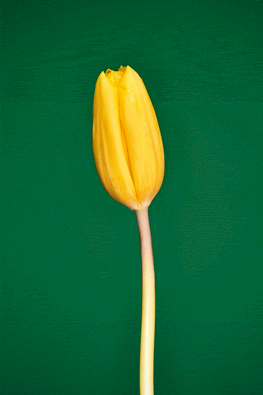
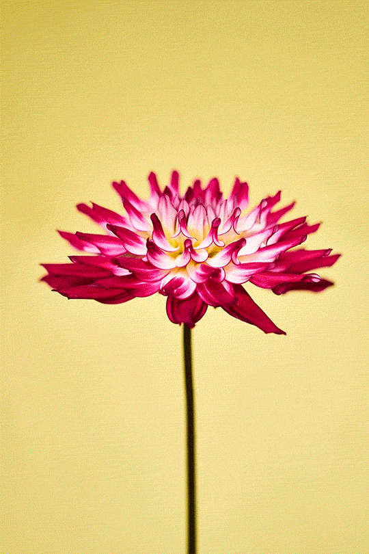
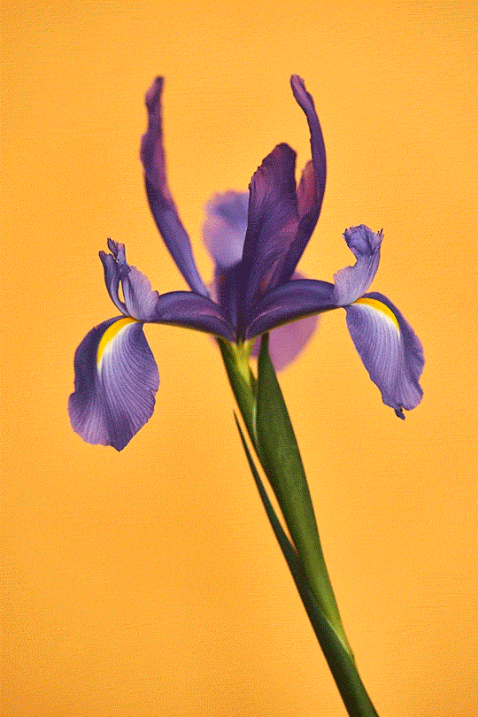
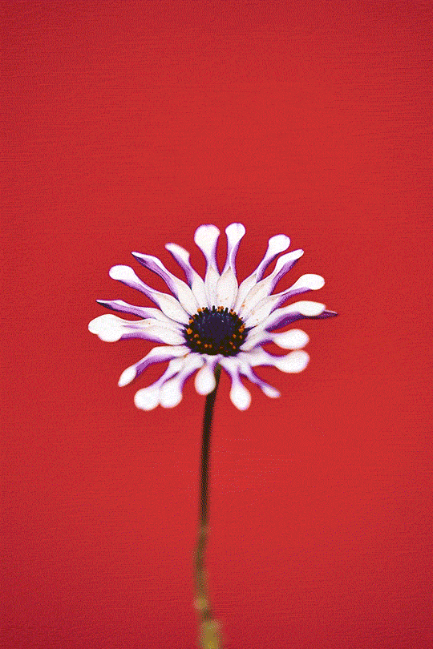
Són testimonis silenciosos de la transformació del món. Cuidem la terra, cuidem el bosc, cuidem la mar. Cuidem les flors.
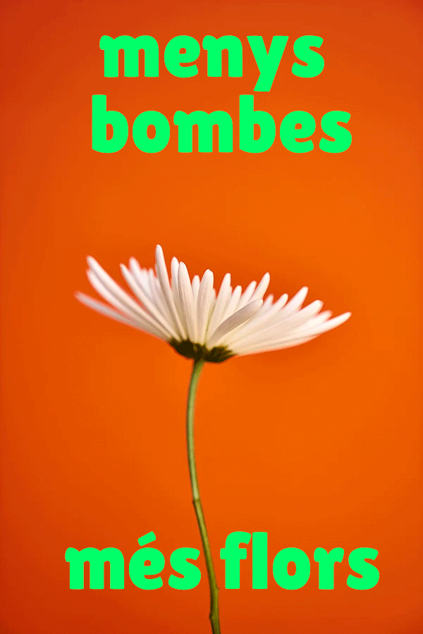
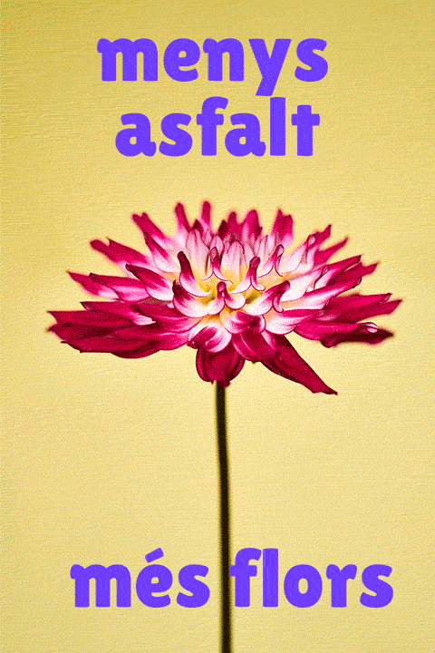
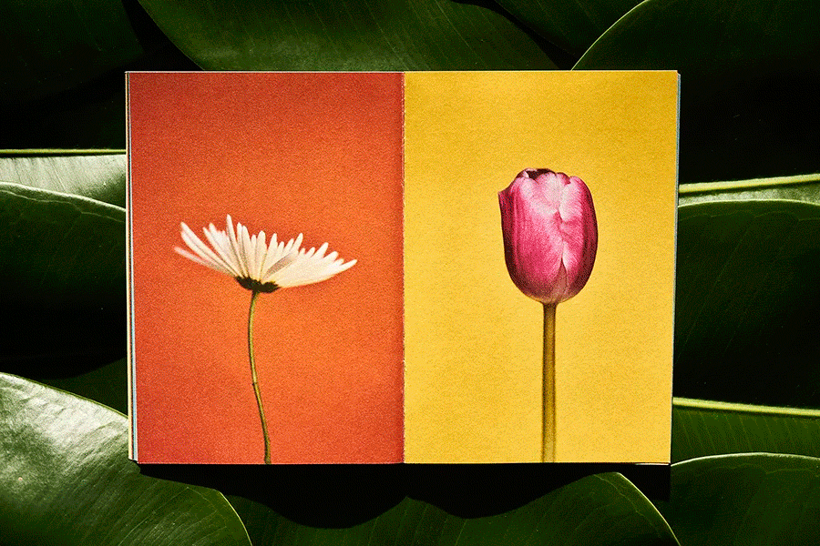